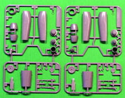

{kind=link}
{kind=link}
{kind=link}
{kind=link}
{kind=link}
{kind=link}

You may click on these small images to view larger pictures
{kind=link}
{kind=link}

Heinkel He-162 �Volksjaeger�
Dragon Kit #5546
Tamiya Kit #61097
MSRP $44.95
MSRP $33.95
Images and text Copyright � 2006 by Matt Swan
Developmental Background
As the Nazi Empire crumbled under the continual onslaught of Allied bombing and troop advances desperate measures were sought out and employed in a futile effort to stem the tide. One of these efforts was the development of the Volksjaeger or People�s Fighter program which specified an aircraft constructed of simple materials requiring little maintenance and low enough cost that damaged units could easily be discarded in favor of new equipment rather than repair. It was also specified that it would be a single seat aircraft powered by a single BMW-003 turbojet engine. These requirements were intended to not draw crucial materials away from existing programs such as the Me-262 production or Folk Wolfe 190 production. The Peoples Fighter would be able to be produced in large numbers and would be flown by the Hitler Youth after just rudimentary flight training. Sounds pretty desperate, doesn�t it.
Not all within the Nazi administration were convinced of the feasibility of this kind of program including Adolf Galland, Willie Messerschmitt and Kurt Tank but as Reichsmarshall Hermann Goering, head of the Luftwaffe, was fully endorsing the program and had a firm grip on Hitler�s ear program development went forward. The requirements were submitted to all German aircraft manufactures and both Heinkel and Blohm and Voss were able to return proposals very quickly. The Heinkel proposal was accepted as being the quickest to implement and the He-162 began serious development from Heinkel P.1073.
Heinkel was given a contract to produce 1000 aircraft which the administration called �Salamander� (Heinkel called it �Sparrow�) to be delivered by end of April 1945 with production scheduled to ramp up to 2000 units per month by May 1945. The main body of the aircraft was manufactured from metal with the wings and tail planes being made of laminated wood very similar to plywood. Two types were to go into production, an A-1 and an A-2 with the former being a bomber destroyer carrying two 30mm cannons and the latter a fighter with two 20mm cannons. With the engine being mounted above and behind the pilot a simple ejection seat was installed to assist with bailing out of the aircraft.
Things really started to get interesting now, when the first prototype rolled off the production line it experienced issues with poor glue in the wood and a gear door fell off during the initial flight. Later during a demonstration flight for Hitler that same aircraft experienced an aileron failure (more bad glue) and crashed killing the test pilot. Even so the program was pushed forward. A second unit was armed with the 30mm cannon and this was found to have too much recoil for the small airframe so construction was focused on the A-2. In February 1945, 46 production A-2s were delivered to the Luftwaffe and the first operational unit was equipped with the type. On April 19 1945 the He-162 drew blood for the first time by downing an RAF fighter but that Salamander was shot down by a Hurricane on its approach to the field. During the month of April He-162s made several kills but also lost several aircraft mostly due to very limited fuel supply, poor quality control in the production process and that the engine only had a ten hour operational lifespan. Ultimately the Volksjaeger program had no serious impact on the war however several did survive to become aerial oddities in museums around the world.
While only the A-2 made it into production and combat several other variations were under development including an A-3 with beefed up airframe to accommodate the 30mm cannon along with a couple of swept wing designs, alternative engine and tail designs. In addition to the fighter/bomber interceptor role the 162 was considered for the Mistel program. This is where a drone aircraft is fitted as a large bomb and a pilot aircraft is slaved to it for delivery. This was done with Fw-190s mounted to Ju-88s and was proposed as a jet variant with the Me-262 and the He-162 as the pilot aircraft. This particular blending was an interesting thought but never actually made it off the drawing board.
The Kits
Dragon
Tri-Master originally kitted the He.162 as a mixed material kit with white metal parts, photo etched parts and high pressure injection molded parts. Dragon acquired these molds when Tri-Master folded and replaced the white metal pieces with plastic and retained the photo etched pieces. These molds were well ahead of their time and set the stage for the future of highly detailed kits. Over the years Dragon would occasionally reissue that He-162 kit however this time they took it a little further. Some limited retooling has been done to the molds and a complete Me-262 with a replacement Mistel fuselage has been added to the box.
The original masters did a very nice job of getting the basic dimensions of the 162 correct and it looks like we have 99% of that original kit here. The parts have very little flash and nice crisp, well defined panel lines. There are some slight mold misalignments at the trailing edge of the 162 wings but it is easily cleaned up with a sanding stick. Considering that the original molds are around twenty years old these pieces are all in very nice condition. The original photo etched fret is included and covers basic engine wiring along with seat belts and a two piece instrument panel. The �retooling� comes into play with the engine cover, the original Dragon/Tri-Master kit allowed for the engine to built open or closed. This kit includes a six piece set of metal hinges that allow the engine cover to be opened or closed at any time during the display of the kit. Also new for this kit is the mounting hardware to attach the 162 to the bomb. While this kit is intended to be mounted with the gear up all the pieces are included for a gear down situation. The gear doors are molded in a single piece and have to be cut apart for a gear down display and do include interior door details. An interesting side note on the packaging of the parts is that the clear parts, 162 mounting hardware, hinges and photo etched pieces are all attached to a sheet of cardboard along with the decals. This seems like a good idea to help prevent shipping damage.
For the bomb half of this kit we have a complete Dragon Me-262 along with a new fuselage section to model the bomb. This means you will have lots of spare parts and may want to consider saving these for other Me-262 conversion projects. As with the 162 part of the kit this half includes all the original 262 interior details including cockpit and landing gear. In other material we have the launching cart that comes from the earlier Dragon Me-262 Mistel package. I removed the bomb fuselage and 162 fuselage pieces and test fit them, both showed some slight warpage around the central areas but should mate up well with some rubber bands. The box art shows the 162 with flaps deployed but the kit has them molded in place in the up position. Taking an inventory of the parts we have two hundred fifty three grey injection molded pieces, four clear parts, nineteen photo etched pieces and six parts associated with the engine cover hinges for a grand total of two hundred eighty two pieces in the box.
You may click on these small images to view larger pictures
Decals and Instructions
Considering the quantity of parts we have to work with and the level of kit this is the instructions are not that complex. Basically we have a average sized fold-out that opens with a copy of the box art and a complete parts map. Next comes a fairly in depth paint code chart that lists paints by Gunze Sanyo Aqueous colors, Mr. Colour numbers and Model Master numbers. Following this are four and a half panels containing eighteen exploded view construction steps that include not only color call-outs but specifications to install 9 grams of weight into the nose of the launching dolly. The last two panels of the instructions cover decal placement and exterior color for four aircraft.
The kit includes a fairly comprehensive set of decals covering three German aircraft and a single captured aircraft. As with most contemporary kits from Dragon there are no swastikas included on the sheet. Decals include service stencils and unit badges. They display good print registry and good color density. The decals are nicely thin and react well with standard setting solutions.
Tamiya
Tamiya brings an He-162 to the table also, this kit is of the 162 only and has some interesting points of its own. Where the Dragon kit offered optional tails this kit comes with the early A-2 tail that features the dual rudders only. As with all Tamiya kits this one displays excellent panel line detail with no flash or sink marks. All parts are shipped sealed in poly bags with little opportunity for damage. The cockpit is well detailed and so too is the engine but there are no photo etched details here. The kit includes a large steel weight to be installed just behind the cockpit and also features a sturdy central wing spar.
An unusual feature of the Tamiya kit is that the engine mounts to the fuselage with a set of poly caps and the kit includes a separate engine dolly along with two sets of engine covers, one to be built open and one built closed. This allows the modeler to interchange the engines and display the model with the nacelle closed and the engine off to one side on the dolly or with the open engine installed on the fuselage. The use of the poly caps allows the change to be made at any time after the model is completed. Another unusual feature is that the ejection seat can be removed from the model after completion for display or examination.
Taking an inventory of this kit we have one hundred ten dark gray injection molded pieces, four clear parts, 1 weight, 2 steel pins and eight poly caps for a total of one hundred twenty five pieces in the box.

You may click on these small images to view larger pictures
Decals and Instructions
Instruction for this kit come as a large fold out of ten panels that begins with a good historical background of the aircraft type followed by a good paint code chart that lists paints by Tamiya paint codes and name only. Following this are fourteen exploded view construction steps that include color call-outs and some construction tips. Two panels are devoted to decal placement and exterior painting for three aircraft. A second A-4 sized sheet includes decal placement and exterior painting instructions for a forth aircraft.
The kit decal sheet does include swastikas, plenty of service stencils and warnings, instrument decals and seat belts as decals. Print registry is spot on the mark and color density looks good. In the past Tamiya decals have had a reputation for being overly thick but that does not appear to be the case here. Previous experience with Tamiya decals indicates they behave well with standard setting solutions.
Conclusions
The Dragon He-162 has long been the only choice for modelers wishing for a 1/48 Salamander and now Tamiya has presented a second choice. The Dragon kit can be had as either the Mistel or simply as the A-2 version whereas the Tamiya kit is the A-2 only. There are a few problems with the Tamiya kit that should be mentioned here; first they got the tail plane all wrong on this kit, it is easily a quarter inch short on each side placing the rudders way too close together. Second the drooped wing tips are at too sharp an angle. If you are looking at the Tamiya kit all by itself, these deficiencies may not be noticeable but in comparison to aircraft drawings, museum pieces or even the Dragon kit these problems are glaringly obvious. The fuselages are very comparable with panel lines and general profile being correct. My suggestion is to buy both kits, build the Dragon with the V tail and use the left over pieces to correct the tail of the Tamiya kit.
General fit and overall detail level is good with both kits and fit is basically good with little or no call for filler putty. At the moment there is very little on the aftermarket for the He-162 with the only real items being offered by Squadron with their replacement canopy and a set of True Details wheels. Really though you don�t need much extra for these kits. I give the Dragon kit a very good recommendation and the Tamiya a fair recommendation


{kind=link}
{kind=link}
{kind=link}
{kind=link}
{kind=link}
{kind=link}
{kind=link}
{kind=link}
{kind=link}
{kind=link}